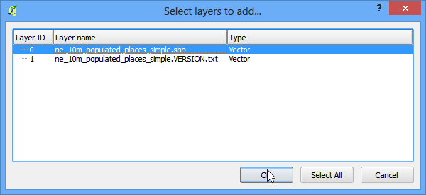

Lucrul cu atribute
[ Download PDF A4 Letter ]
Datele GIS sunt compuse din două părți - entități și atribute. Atributele reprezintă date structurate despre fiecare entitate. Acest tutorial vă arată cum să vizualizați atributele și cum să le interogați în QGIS.
Privire de ansamblu asupra activității
Setul de date pentru acest tutorial conține informații despre locurile populate ale lumii. Scopul este de a interoga și de a găsi toate capitalele lumii care au mai mult de 1.000.000 locuitori.
Procedura
O dată ce ați descărcat datele, deschideți QGIS. Mergeți la .

Faceți clic pe Browse și navigați la folderul unde ați descărcat datele.

Localizați fișierul descărcat, ne_10m_populated_places_simple.zip. Nu e nevoie să-l dezarhivați. QGIS are capacitatea de a citi în mod direct fișierele zip. Selectați fișierul și faceți clic pe Open.

Vi se va cere să selectați stratul care trebuie deschis. Selectați ne_10m_populated_places_simple.shp și faceți clic pe OK.

Straturile selectate se vor încărca în QGIS, după care vor apărea mai multe puncte, reprezentând locurile populate ale lumii.

Pentru a vedea atributele faceți clic dreapta pe strat și selectați Open Attribute Table.

Explorați atributele și valorile lor.

Deoarece ne interesează populația din fiecare entitate, pop_max va fi câmpul căutat. Puteți face dublu-clic pe denumirea câmpului, pentru a sorta coloana în ordine descrescătoare.

Acum suntem gata pentru a efectua interogarea acestor atribute. Apăsați butonul Select features using an expression.

În fereastra Select By Expression, expandați secțiunea Fields and Values și efectuați dublu-clic pe eticheta pop_max. Veți observa că ea se adaugă în zona de expresii. Dacă nu sunteți siguri cu privire la valorile câmpului, aveți posibilitatea să faceți clic pe Load all unique values pentru a vedea valorile atributelor prezente în setul de date. Pentru acest exercițiu, căutăm să găsim toate entitățile care au un număr de locuitori mai mare de 1.000.000. Așa că introduceți expresia “pop_max” > 1000000, după care faceți clic pe Select.

Apăsați Close și reveniți la fereastra principală a QGIS. Veți observa că un subset de puncte este redat în galben. Acesta este rezultatul interogării noastre, putându-se observa toate locurile din setul de date care au valoarea atributului pop_max mai mare decât 1.000.000.

Scopul acestui exercițiu este de a găsi locațiile care reprezintă capitale de țări. Să rafinăm interogarea noastră, pentru a selecta doar acele locuri care sunt capitale. În tabela de atribute, efectuați clic pe Select feature using an expression.

Câmpul care conține aceste date este adm0cap. Valoarea 1 indică faptul că respectivul loc reprezintă o capitală. Introduceți expresia “adm0cap”= 1. Din moment ce dorim să căutăm numai în rezultatele interogării anterioare, vom alege Select within selection`.

Clic pe Close și reveniți la fereastra principală a QGIS. Acum, veți vedea un mic subset de puncte selectate. Acesta este rezultatul celei de-a doua interogări, el arătându-ne acele locuri din setul de date, care sunt capitale țări și depășesc 1.000.000 locuitori.

Urmează să salvăm aceste rezultate într-un strat separat. Faceți clic dreapta pe strat și selectați Save Selection As.

Păstrați formatul selecției ca ESRI Shapefile și introduceți numele de ieșire large_capital_cities.shp. Bifați caseta de lângă Add saved file to map apoi faceți clic pe OK.

Fișierul shape nou creat se va încărca automat în QGIS. Ascundeți stratul locurilor populate, debifând caseta de lângă aceasta. Acum, veți vedea doar entitățile noului strat creat, care conține capitalele lumii și care au o mai mult de 1.000.000 locuitori.